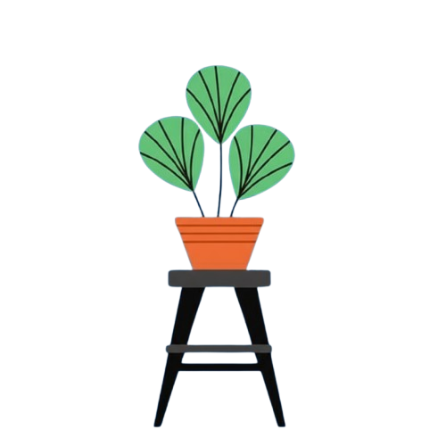
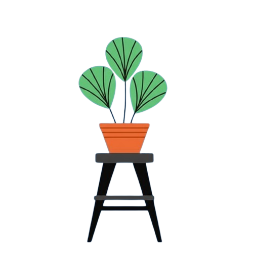
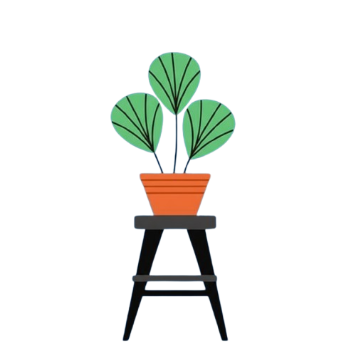

AbsensiKu
Sistem Absensi Digital Modern untuk Sekolah. Kelola kehadiran siswa dengan mudah menggunakan teknologi pengenalan wajah dan QR code. Cepat, akurat, dan efisien.
 

Sistem Absensi Digital Modern untuk Sekolah. Kelola kehadiran siswa dengan mudah menggunakan teknologi pengenalan wajah dan QR code. Cepat, akurat, dan efisien.

Sistem pengenalan wajah canggih untuk memastikan keaslian identitas siswa dengan akurasi tinggi.
Absensi cepat dan akurat melalui pemindaian QR code unik untuk setiap siswa atau kelas dengan teknologi terbaru.
Pantau kehadiran siswa secara real-time dengan dashboard yang informatif dan mudah dipahami.
Data siswa terenskripsi dan tersimpan dengan aman
Absensi dalam hitungan detik, tanpa antrian panjang
Bergabung dengan ratusan sekolah yang telah menggunakan AbsensiKu untuk mengelola kehadiran dengan lebih efektif.